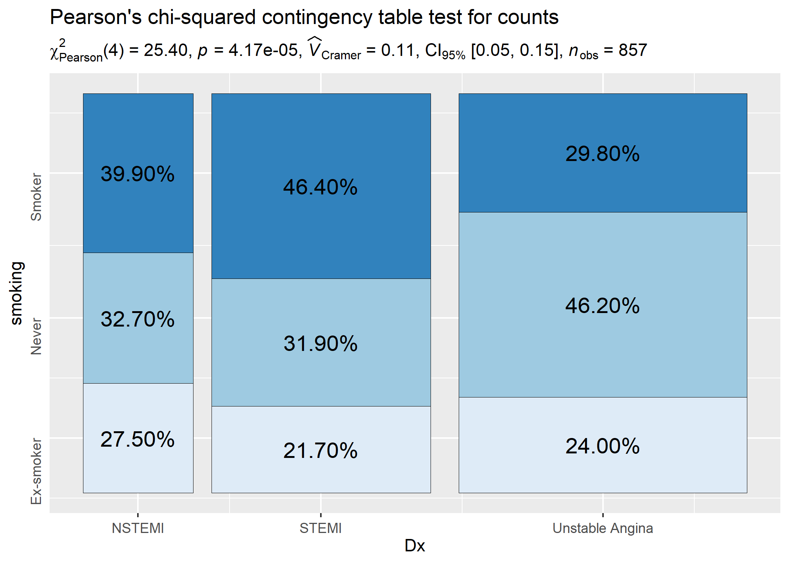

Primary functions
A list of primary functions in this package can be found at the package website: https://indrajeetpatil.github.io/statsExpressions/reference/index.html
Following are few examples of how these functions can be used.
Example: Expressions for one-way ANOVAs
Between-subjects design
Let’s say we want to check differences in weight of the vehicle based on number of cylinders in the engine and wish to carry out Welch’s ANOVA:
# setup
set.seed(123)
library(ggplot2)
library(ggforce)
library(statsExpressions)
# plot with subtitle
ggplot(iris, aes(x = Species, y = Sepal.Length)) +
geom_violin() +
geom_sina() +
labs(
title = "Fisher's one-way ANOVA",
subtitle = expr_anova_parametric(iris, Species, Sepal.Length, var.equal = TRUE)
)
In case you change your mind and now want to carry out a robust ANOVA instead. Also, let’s use a different kind of a visualization:
# setup
set.seed(123)
library(ggplot2)
library(statsExpressions)
library(ggridges)
# create a ridgeplot
ggplot(iris, aes(x = Sepal.Length, y = Species)) +
geom_density_ridges(
jittered_points = TRUE, quantile_lines = TRUE,
scale = 0.9, vline_size = 1, vline_color = "red",
position = position_raincloud(adjust_vlines = TRUE)
) +
labs(
title = "A heteroscedastic one-way ANOVA for trimmed means",
subtitle = expr_anova_robust(iris, Species, Sepal.Length)
)
Needless to say, you can also use these functions to display results in ggplot-extension packages. For example, ggpubr:
set.seed(123)
library(ggpubr)
library(ggplot2)
# plot
ggboxplot(
ToothGrowth,
x = "dose",
y = "len",
color = "dose",
palette = c("#00AFBB", "#E7B800", "#FC4E07"),
add = "jitter",
shape = "dose"
) + # adding results from stats analysis using `statsExpressions`
labs(
title = "Kruskall-Wallis test",
subtitle = expr_anova_nonparametric(ToothGrowth, dose, len, type = "np")
)
Within-subjects design
Let’s now see an example of a repeated measures one-way ANOVA.
# setup
set.seed(123)
library(ggplot2)
library(WRS2)
library(ggbeeswarm)
library(statsExpressions)
ggplot2::ggplot(WineTasting, aes(Wine, Taste, color = Wine)) +
geom_quasirandom() +
labs(
title = "Friedman's rank sum test",
subtitle = expr_anova_nonparametric(WineTasting, Wine, Taste, paired = TRUE, type = "np")
)
Example: Expressions for two-sample tests
Between-subjects design
# setup
set.seed(123)
library(ggplot2)
library(gghalves)
library(ggbeeswarm)
library(hrbrthemes)
library(statsExpressions)
# create a plot
ggplot(ToothGrowth, aes(supp, len)) +
geom_half_boxplot() +
geom_beeswarm(beeswarmArgs = list(side = 1)) +
theme_ipsum_rc() +
# adding a subtitle with
labs(
title = "Two-Sample Welch's t-test",
subtitle = expr_t_parametric(ToothGrowth, supp, len)
)
Example with ggpubr:
# setup
set.seed(123)
library(ggplot2)
library(ggpubr)
library(statsExpressions)
# basic plot
gghistogram(
data.frame(
sex = factor(rep(c("F", "M"), each = 200)),
weight = c(rnorm(200, 55), rnorm(200, 58))
),
x = "weight",
add = "mean",
rug = TRUE,
fill = "sex",
palette = c("#00AFBB", "#E7B800"),
add_density = TRUE
) + # displaying stats results
labs(
title = "Yuen's two-sample test for trimmed means",
subtitle = expr_t_robust(
data = data.frame(
sex = factor(rep(c("F", "M"), each = 200)),
weight = c(rnorm(200, 55), rnorm(200, 58))
),
x = sex,
y = weight,
type = "robust",
messages = FALSE
)
)
Another example with ggiraphExtra:
# setup
set.seed(123)
library(ggplot2)
library(ggiraphExtra)
library(gcookbook)
library(statsExpressions)
# plot
ggDot(heightweight, aes(sex, heightIn, fill = sex),
boxfill = "white",
binwidth = 0.4
) +
labs(
title = "Wilcoxon two-sample test",
subtitle = expr_t_nonparametric(heightweight, sex, heightIn, type = "np")
)
Within-subjects design
We can also have a look at a repeated measures design and the related expressions.
# setup
set.seed(123)
library(ggplot2)
library(statsExpressions)
library(tidyr)
library(PairedData)
data(PrisonStress)
# plot
paired.plotProfiles(PrisonStress, "PSSbefore", "PSSafter", subjects = "Subject") +
# `statsExpressions` needs data in the tidy format
labs(
title = "Two-sample Wilcoxon paired test",
subtitle = expr_t_nonparametric(
data = pivot_longer(PrisonStress, starts_with("PSS"), "PSS", values_to = "stress"),
x = PSS,
y = stress,
paired = TRUE
)
)
Example: Expressions for one-sample tests
# setup
set.seed(123)
library(ggplot2)
library(statsExpressions)
# creating a histogram plot
ggplot(mtcars, aes(wt)) +
geom_histogram(alpha = 0.5) +
geom_vline(xintercept = mean(mtcars$wt), color = "red") +
# adding a caption with a non-parametric one-sample test
labs(
title = "One-Sample Wilcoxon Signed Rank Test",
subtitle = expr_t_onesample(mtcars, wt, test.value = 3, type = "nonparametric")
)
Example: Expressions for correlation analyses
Let’s look at another example where we want to run correlation analysis:
# setup
set.seed(123)
library(ggplot2)
library(statsExpressions)
# create a ridgeplot
ggplot(mtcars, aes(mpg, wt)) +
geom_point() +
geom_smooth(method = "lm") +
labs(
title = "Spearman's rank correlation coefficient",
subtitle = expr_corr_test(mtcars, mpg, wt, type = "nonparametric")
)
Example: Expressions for contingency table analysis
For categorical/nominal data - one-sample:
# setup
set.seed(123)
library(ggplot2)
library(statsExpressions)
# basic pie chart
ggplot(as.data.frame(table(mpg$class)), aes(x = "", y = Freq, fill = factor(Var1))) +
geom_bar(width = 1, stat = "identity") +
theme(axis.line = element_blank()) +
# cleaning up the chart and adding results from one-sample proportion test
coord_polar(theta = "y", start = 0) +
labs(
fill = "Class",
x = NULL,
y = NULL,
title = "Pie Chart of class (type of car)",
subtitle = expr_onesample_proptest(as.data.frame(table(mpg$class)), Var1, counts = Freq),
caption = "One-sample goodness of fit proportion test"
)
Another example of contingency tabs analysis:
# setup
set.seed(123)
library(moonBook)
library(ggiraphExtra)
library(statsExpressions)
# plot
ggSpine(
data = acs,
aes(x = Dx, fill = smoking),
addlabel = TRUE,
interactive = FALSE
) +
labs(
x = "diagnosis",
title = "Pearson's chi-squared contingency table test for counts",
subtitle = expr_contingency_tab(acs, Dx, smoking, paired = FALSE)
)
You can also use these function to get the expression in return without having to display them in plots:
# setup
set.seed(123)
library(ggplot2)
library(statsExpressions)
# Pearson's chi-squared test of independence
expr_contingency_tab(mtcars, am, cyl)
#> paste(NULL, chi["Pearson"]^2, "(", "2", ") = ", "8.74", ", ",
#> italic("p"), " = ", "0.013", ", ", widehat(italic("V"))["Cramer"],
#> " = ", "0.46", ", CI"["95%"], " [", "0.08", ", ", "0.75",
#> "]", ", ", italic("n")["obs"], " = ", 32L)Example: Expressions for meta-analysis
# setup
set.seed(123)
library(metaviz)
library(ggplot2)
# meta-analysis forest plot with results random-effects meta-analysis
viz_forest(
x = mozart[, c("d", "se")],
study_labels = mozart[, "study_name"],
xlab = "Cohen's d",
variant = "thick",
type = "cumulative"
) + # use `statsExpressions` to create expression containing results
labs(
title = "Meta-analysis of Pietschnig, Voracek, and Formann (2010) on the Mozart effect",
subtitle = expr_meta_parametric(dplyr::rename(mozart, estimate = d, std.error = se))
) +
theme(text = element_text(size = 12))